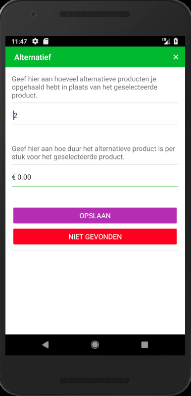

BuddyApp (Dutch)
SuperBuddy is een “on-demand” boodschappen bezorgservice in Nederland.
Je kunt boodschappen bij een lokale Albert Heijn, Jumbo of EkoPlaza bestellen.
Deze worden dan dezelfde dag aan de deur geleverd. Ze bezorgen in tijdslots van 30 minuten, binnen twee uur.
Je kunt zelf aangeven waar je de boodschappen wilt hebben, bijvoorbeeld thuis of op het werk. Nadat je een bestelling geplaatst hebt gaat een buddy (bezorger) de boodschappen voor je halen. Je kunt een beoordeling geven zodat de
buddies je beter kunnen helpen.
 De BuddyApp is een webapplicatie waarmee Buddies de klantenbestellingen kunnen vervullen. Dit houdt in dat betaalde orders getoond worden gebaseerd op de stad van de Buddy. Deze kan hij inzien om te bepalen of de order voor hem geschikt is om te accepteren, zodat hij deze kan doorlopen. Een overzicht van geaccepteerde orders zorgt ervoor dat de Buddy duidelijk heeft welke van hem zijn. De details van een order zijn duidelijk en gericht op het efficiënt informeren van de Buddy. Klantgegevens zijn aangepast aan de toegang van de Buddy. Als hij een order geaccepteerd heeft kan hij, om contact op te nemen met de klant, meer gegevens inzien. Het doorlopen van een order houdt in dat de Buddy ieder product moet nakijken. Per product wordt afgevinkt of deze gehaald of niet gevonden is, of dat een alternatief is gevonden. Deze acties moeten teruggezet kunnen worden. De kosten van een alternatief product moeten bijgehouden worden. Voor het bedrijf is het nodig dat Buddies zichzelf kunnen inplannen. Buddies kunnen met de app hun beschikbaarheid opgeven, aanpassen en verwijderen dit proces goed ingericht is.
Helaas is de code van dit project niet in te zien omdat het eigendom was van het bedrijf.